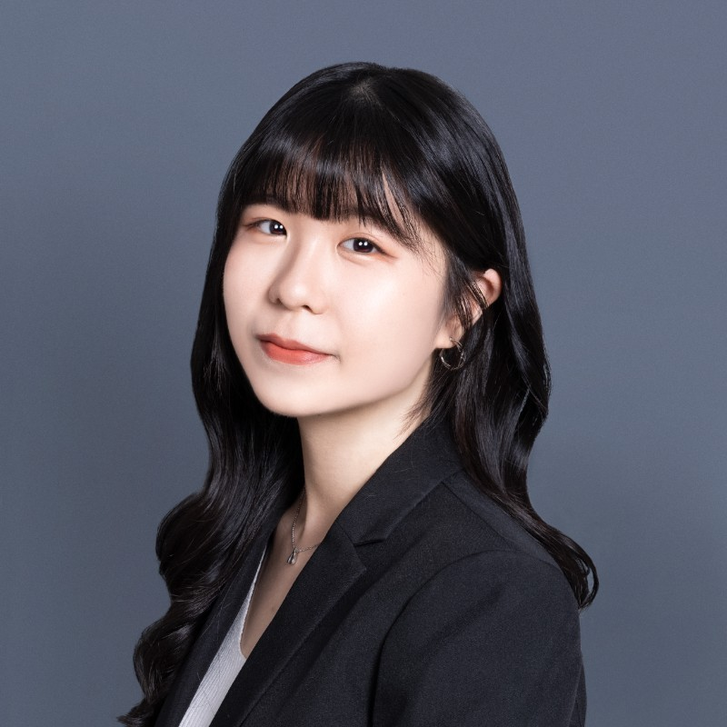

Connie Lo
 Email: connielo0112@gmail.com
Email: connielo0112@gmail.com
 LinkedIn: Hsin-Tung Lo
LinkedIn: Hsin-Tung Lo
Summary
1.5 years of work experience in the sustainable finance industry. Incoming CMU Master of Information Management student. Passionate about leveraging technology and data to enhance sustainable development.
Education
- Bachelor of Business Administration - Division of Technology Management, National Taiwan University (2018-2023)
- Master of Information Systems Management (MISM) - Business Intelligence & Data Analytics (BIDA) pathway , Carnegie Mellon University (2024-2025)
Work Experience
IBF Financial Holdings
Senior Administrator, Planning Department (Jun. 2023 – Now)
ESG Intern, Planning Department (Dec. 2022 – May. 2023)
- Oversee ESG operations such as compiling the group’s 2022 sustainability report, collaborating seamlessly with subsidiaries and top-tier accounting firm PwC Taiwan to enhance disclosure transparency, applying PCAF methodology, and positioning the company for Science-Based Targets initiative commitment.
- Responsible for international sustainability assessments and formulating sustainable strategies, including evaluating CDP questionnaire items for enhanced disclosure, and conducting gap analysis for sustainable improvements.
beBit
Consulting PTA Intern, PT (Feb. 2022 – June. 2022)
- Supported marketing research initiatives, including conducting 15+ in-depth customer interviews, analyzing 50+ decision factors, and contributing to over 100 pages of persuasive slide writing.
- Designed questionnaires and processed data for quantitative analysis, resulting in actionable insights such as NPS analysis.
BenQ Corporation
- Devised targeted marketing strategies for monitor light bar products in the UK market, achieving high performance, such as Instagram product unboxing posts with 2723 likes.
- Established and managed BenQ Lighting UK's Twitter account, resulting in a 10% increase in daily orders and 40% in product views originating from Twitter.
Selective Projects
Awards and Certifications
Academic Excellence Award, Department of Business Administration (NTU)
3rd Place, LINE Fresh 2021 Case Competition (164 teams)
- Mastered chatbot software and front-end programming through self-study, presenting business solutions with prototypes to support economic recovery and enhance footfall in a prominent business district near National Taiwan Normal University.
National Champion, 19th ATCC Case Competition (2500 contestants)
- Led a team of four to represent the Shin Kong Life team and crafted an exceptional winning business proposal combining CSR.
- Successfully applied for a patent for the groundbreaking 'Insurance Platform for Undergraduates' platform after the competition and is expected to be implemented in the future.
Skills
- Problem Solving: Proficient
- Project Management: Proficient
- HTML/CSS/Java: Competent
- Data Analytics: Competent